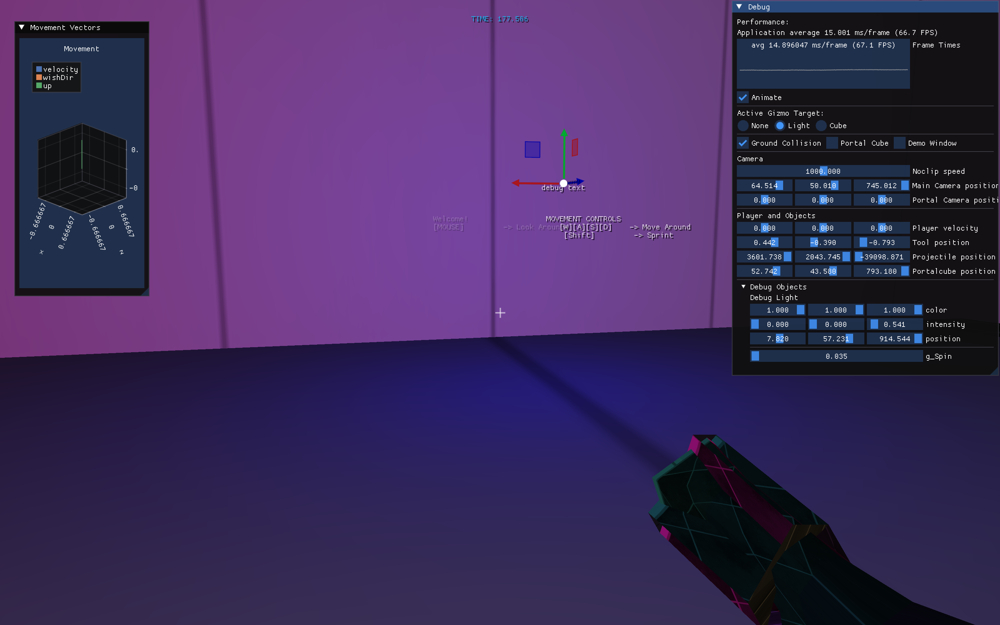
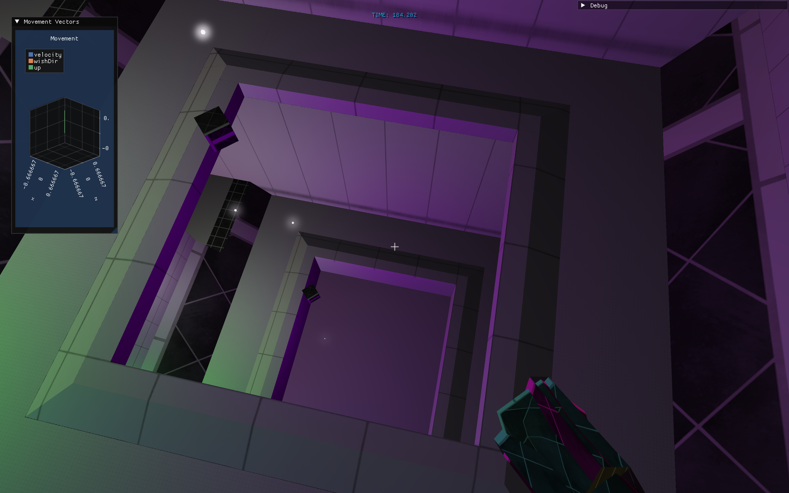
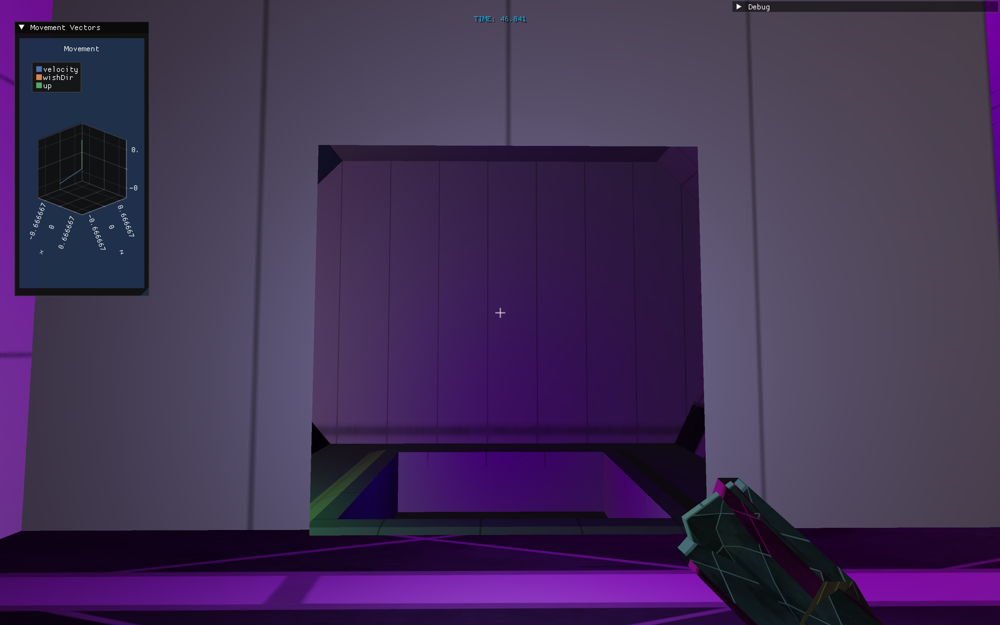

This was a solo project made by Ben Varni that mainly focused on implementing portals and Quake-style movement in OpenGL.
This project was made as a learning experience, and as such, most systems were written manually without external libraries (such as the physics and collision system).
Reach the trophy at the end of the corridors by moving through the platforms and ramps.
The level features alternate routes that are significantly faster, achievable by using movement tech.
There is also a portal room left of the starting location
with an interactable cube.
MOVEMENT CONTROLS [W][A][S][D] -> Move Around [Space] -> Jump, can be held [Shift] -> Sprint [L-Click] -> Fire / Pickup PortalCube [R-Click] -> Reload [HOLD R-Click] -> Charge [R] -> Reset position [ESC] -> Exit Press [~] to unlock mouse cursor MAIN MOVEMENT TECHNIQUES B-Hopping, Rocket Jumping, Surfing
The movement is based on Quake I's movement system,
which notably uses a wish vector to differentiate between user input and their actual velocity.
The official source code of Quake I is released on GitHub and
provides a great starting point for learning about the math behind the movement!
The video demonstrates B-Hopping, Surfing, and Rocket Jumping
Fun fact: the direction the bullet bounces can be calculated in one line with glm::reflect.
Followed the tutorial on FBOs and bloom from LearnOpenGL,
The article does a great job of explaining it. I would recommend visiting it.
The video shows an old build where bloom was much more intense
ImGui is very configurable, even is able to create
billboarded text in the world using the view and proj matrices
I used ImGui for the HUD and debug tools,
ImPlot3D to visualize the movement vectors,
and ImGuizmo to move debug objects around the world
As seen in the main video as well, the text fades out after a certain distance.

Uses a raycast to find the distance from player to cube
Also uses a discard shader to show how the cube can be split
Portals use stencil buffers, following Thomas Rinsma's implementation
Sebastian Lague also has a great video on implementing portals,
which also discusses how to write object teleportation and the discard shader.

